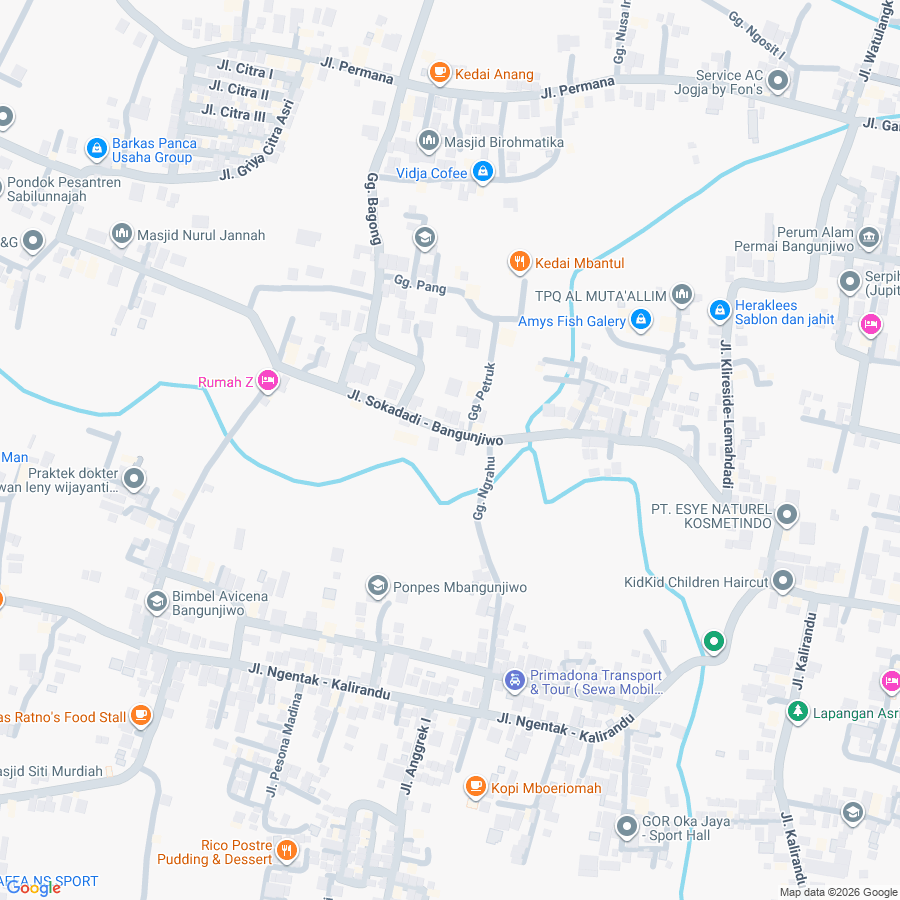

Mushola Binaan PRM Bangunjiwo Barat
Mushala Al-Amin
Padukuhan Lemahdadi, Bangunjiwo, Kasihan, Bantul
Wilayah Padukuhan
Lemahdadi
Kode Lokasi (Plus Code)
574R+5H Lemahdadi, Bangunjiwo
Status Pembinaan
PRM Bangunjiwo Barat
Mushola tempat pembinaan anak dan tadarus malam warga Lemahdadi. Merupakan salah satu simpul sentral kegiatan dakwah, sholat berjamaah lima waktu, pengajian selapanan, TPA santri, dan penyaluran zakat infak di lingkungan padukuhan Lemahdadi.
Dokumentasi Visual Asli
Klik foto untuk memperbesar
Galeri Foto & Dokumentasi (1 Foto)

Perbesar